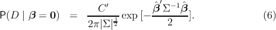
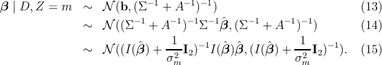
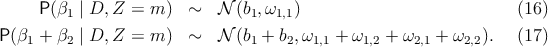
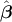

(0, ),
(0, ),

where for each W˙m in M, we have that W˙m = ϕm + ωm on the diagonal and ω on the off-diagonal.
In computing a mixture distribution, we recognize that
p(θ∣D) ∝ f(x∣θ) ∑
wipi(theta)) ∝∑
wipi(theta)f(x∣θ)) ∝
![∫
C ′ (β - ˆβ)′Σ- 1(β - ˆβ) 1 β ′A -1β
P(D | Z = m ) = ------1exp [- --------------------]-----1 exp [- --------](d2β)
2π|Σ |2 2 2 π|A|2 2
C ′ ∫ (β - ˆβ)′Σ- 1(β - ˆβ) + β ′A -1β
= -----2---1---1 exp [- -------------------------------]d β (3)
(2π )|Σ |2|A |2 2](mixture3x.png)
Let b = (Σ-1 + A-1)-1Σ-1, then P(D∣Z = m)
![C ′ ∫ (β - b)′(Σ- 1 + A -1)(β - b ) - βˆ′Σ -1(Σ -1 + A- 1)- 1Σ-1βˆ+ ˆβ′Σ- 1ˆβ
= --------1---1- exp [- ------------------------------------------------------------------]d(β4)
(2π)2|Σ |2|A|2 2
C′2π|(Σ -1 + A -1)-1|12 - ˆβ ′Σ -1(Σ- 1 + A -1)-1Σ -1ˆβ + βˆ′Σ -1ˆβ
= ------------1---1-----exp [- --------------------------------------]. (5)
(2π)2|Σ |2|A|2 2](mixture5x.png)
And

Then, ABF can be written as
![2 P(D--| Z-=-m-)
BFi (σ m) = P (D | β = 0) (7)
1 ′
|(Σ--1-+-A--1)-1|2 --ˆβ-Σ--1(Σ--1-+-A--1)-1Σ--1βˆ-
= |A |12 exp [- 2 ]. (8)
′
1 - ˆβ I(ˆβ )(I (βˆ) + σ12I2)-1I(βˆ)ˆβ
= ---------1---1----exp[- ------------------m------------].(9)
|I(ˆβ) + σ2m-I2|2σ2m 2](mixture7x.png)
And a posterior on β is
![P(β | D, Z = m ) ∝ L(β )P (β | Z = m ) (10 )
(β - ˆβ )′Σ -1(β - ˆβ ) β ′A -1β
∝ exp[- --------------------]exp [- --------] (11 )
′2 -1 -1 2
∝ exp[- (β---b-)(Σ---+-A---)(β---b-)], (12 )
2](mixture8x.png)
leading to

Let b = (b1,b2) and (Σ-1 + A-1)-1 = Ω, then

0.1 BF and posterior prob approximation
MLE for πslα and posterior on α
sl can be computed as described in the previous
sections. This section describes derivations for the approximate Bayes Factor
(ABF) and posterior on βsl when βsl ~(0,σsl,m2I
2) (Zsl = m) in the prior
above. Then, MLE for πslβ and posterior on β
sl can be computed as described in
the previous sections.
I drop the subscript s and l for convenience. Let Σ = I()-1 and A = ϕm2 + ω m2I 2+omegaˆ2˙m on the off-diagonal